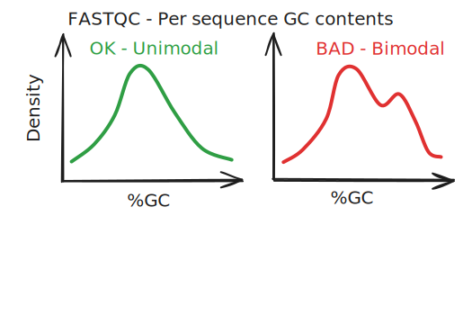
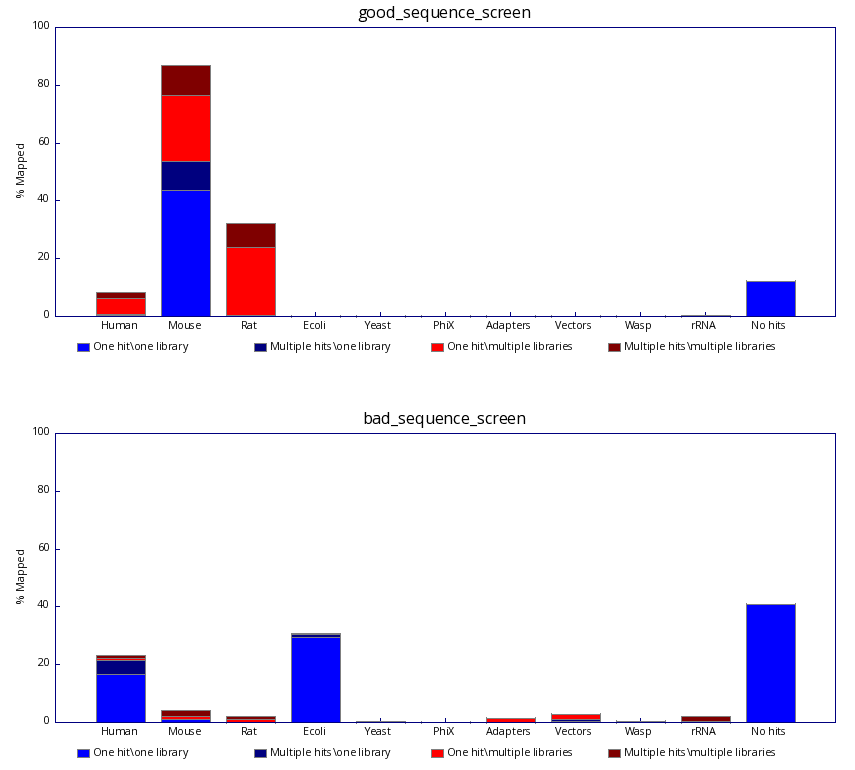
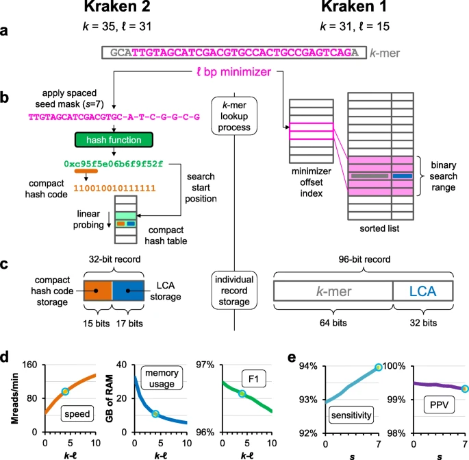
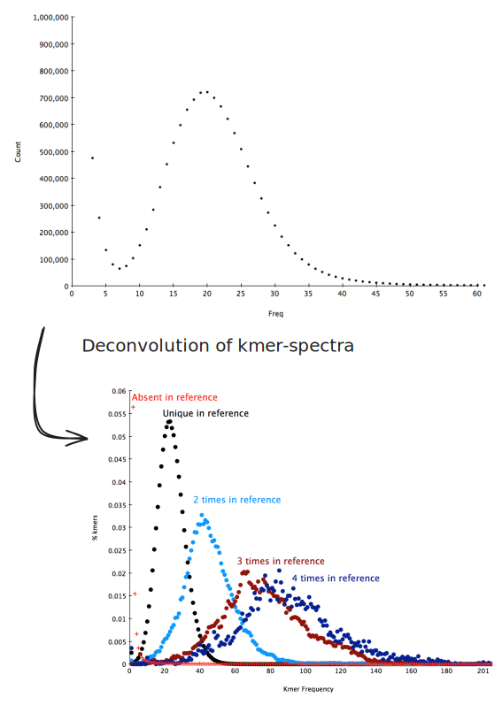

Preliminary Analysis: Contamination Detection and Genome Scoping
3 Preliminary Analysis: Contamination and Genome Scoping
Before diving into the computationally intensive process of genome assembly, a preliminary analysis of the sequencing data is crucial. This step helps in identifying potential issues like contamination and in estimating key characteristics of the genome. This “genome scoping” allows for a more informed approach to assembly, helping to choose the right tools and parameters.
3.1 Contamination Detection
Sequencing samples can be contaminated with DNA from various sources, such as bacteria, viruses, or even DNA from other organisms handled in the lab. Detecting and understanding this contamination is essential as it can significantly impact the quality of the final assembly.
3.1.1 Initial Clues from FastQC
As we saw in the primary analysis chapter, tools like FastQC (Andrews 2010) provide a first look at the data quality. The “Per sequence GC content” plot is particularly useful for detecting contamination. A unimodal distribution of GC content is expected for a pure sample. If the plot shows multiple peaks, it may indicate the presence of DNA from different organisms with different GC contents.

3.1.2 Legacy Approach: Fastq-Screen
A more direct way to identify contamination is to screen the sequencing reads against a panel of genomes from potential contaminants. Fastq-Screen (Wingett and Andrews, n.d.) is a tool designed for this purpose. It takes a subset of the reads and aligns them against multiple reference genomes using an aligner like Bowtie2 (Langmead and Salzberg 2012) or BWA (Li and Durbin 2010). The output shows the percentage of reads mapping to each genome, giving a clear picture of the sample’s composition.

While effective, this alignment-based approach can be time-consuming, especially with large datasets and many potential contaminant genomes.
3.1.3 Modern Approach: K-mer Based Classification with Kraken2
Modern tools have shifted towards alignment-free methods for faster and more efficient taxonomic classification. Kraken2 (Wood, Lu, and Langmead 2019) is a widely used tool in this category. It uses a k-mer-based approach to assign a taxonomic label to each read.
3.1.3.1 What are K-mers?
A k-mer is a substring of length k from a DNA sequence. For example, the sequence AGATTACA has the following 5-mers (k=5): AGATT, GATTA, ATTAC, TTACA.
The core idea behind k-mer-based methods is that every species has a unique set of k-mers in its genome. By breaking down reads into their constituent k-mers and looking them up in a pre-built database, we can rapidly identify the species of origin for each read.
3.1.3.2 How Kraken2 Works: Speed and Efficiency
Kraken2 achieves its remarkable speed and memory efficiency through a more sophisticated approach than simply storing all k-mers. Here are the key concepts:
3.1.3.2.1 Understanding Minimizers
Instead of storing every k-mer, Kraken2 works with minimizers. A minimizer is the lexicographically smallest substring of length ℓ found within a k-mer (including its reverse complement). This concept dramatically reduces storage requirements.
Let’s illustrate with a simple example using 5-mers and minimizers of length 3:
| Position | 5-mer | All 3-mers in 5-mer | Minimizer (smallest) |
|---|---|---|---|
| 1 | ATCGG | ATC, TCG, CGG | ATC |
| 2 | TCGGA | TCG, CGG, GGA | CGG |
| 3 | CGGAT | CGG, GGA, GAT | CGG |
| 4 | GGATC | GGA, GAT, ATC | ATC |
Notice how consecutive k-mers often share the same minimizer (CGG appears in positions 2 and 3). This property means that instead of storing 4 different 5-mers, we only need to store 2 minimizers, significantly reducing storage requirements.

How Kraken2 uses minimizers:
Storage of Minimizers: For each k-mer, Kraken2 computes its minimizer and stores only the minimizer in the database, not the full k-mer. The Lowest Common Ancestor (LCA) of a k-mer is assumed to be the same as its minimizer’s LCA.
Spaced Seeds: To improve classification accuracy, Kraken2 uses spaced seeds where certain positions in the minimizer are masked (not considered during search). Starting from the next-to-rightmost position, every other position is masked until the specified number of positions are masked. This approach increases sensitivity while decreasing specificity, allowing better detection of related sequences with mutations.
Compact Hash Table: The database itself is not a simple list but a compact hash table. This is a probabilistic data structure that maps minimizers to their taxonomic LCA. It allows for extremely fast queries and low memory usage. However, being a probabilistic structure, it has a very small chance of returning an incorrect result. This is a trade-off for its speed, and users can apply confidence scoring thresholds to filter out low-confidence assignments and mitigate this possibility.
This combination of techniques avoids the need for slow alignment algorithms and makes it possible to classify millions of reads in minutes, even on a standard laptop.
The output of Kraken2 is a report that details the taxonomic composition of the sample, allowing for precise identification of the target organism and any contaminants.
3.1.3.3 Choosing a Kraken2 Database
One of the key advantages of Kraken2 is the availability of pre-built databases that can be easily downloaded and used. The Index Zone by Ben Langmead provides regularly updated databases with different taxonomic coverage:
MinusB: Contains RefSeq archaea, viral, plasmid, human, and UniVec_Core sequences (~10 GB). This database excludes bacterial genomes, making it useful for detecting non-bacterial contamination.
Standard: The most commonly used database, containing RefSeq archaea, bacteria, viral, plasmid, human, and UniVec_Core sequences (~87 GB). This provides broad taxonomic coverage for most contamination detection needs.
PlusPF: Extends the Standard database with protozoa and fungi (~93 GB), useful for eukaryotic samples that might contain these contaminants.
core_nt: A massive database containing sequences from GenBank, RefSeq, TPA, and PDB (~278 GB). This comprehensive collection demonstrates the true scalability advantage of k-mer-based methods.
The ability to use such large databases like core_nt highlights a fundamental advantage of Kraken2 over alignment-based methods. While building Bowtie2 or BWA indexes for hundreds of gigabytes of reference sequences would be computationally prohibitive and memory-intensive, Kraken2’s k-mer-based approach makes this scale of analysis practical and fast. This scalability is what enables comprehensive contamination screening that would be unrealistic with traditional alignment approaches.
3.2 Genome Scoping with K-mer Analysis
Beyond contamination detection, k-mer analysis is a powerful technique for estimating key genome characteristics directly from the raw sequencing reads, without the need for an assembly. Tools like KmerGenie and KAT (K-mer Analysis Toolkit) are specialized for this purpose.
3.2.1 How K-mer Scoping Tools Work
The foundation of genome scoping is fast and efficient k-mer counting. Tools like KAT are often built upon specialized k-mer counting engines like Jellyfish. Jellyfish is designed to count k-mers using an order of magnitude less memory and time compared to other methods. It achieves this through several key innovations:
Memory-Efficient Hash Table: It uses a highly optimized, memory-efficient hash table structure to store and count the k-mers, minimizing the RAM footprint. Jellyfish exploits the fact that a k-mer’s position in the hash table already encodes part of its information. By using bijective hash functions, it can store only the high-order bits of the encoded k-mer, significantly reducing the storage space per k-mer.
Parallelism: It is designed for modern multi-core processors and uses lock-free data structures by exploiting the “compare-and-swap” CPU instruction. This allows multiple threads to count k-mers in parallel with minimal overhead, dramatically increasing speed.
By using such an efficient engine, tools like KAT can process massive sequencing datasets quickly to generate a k-mer spectrum—a frequency plot showing how many k-mers appear a certain number of times. This plot provides a wealth of information:
- Genome Size: The total number of unique k-mers in the genome can be estimated from the main peak of the k-mer spectrum.
- Ploidy and Heterozygosity: In a diploid organism, heterozygous sites will create unique k-mers for each allele, resulting in a peak at half the coverage of the main homozygous peak. The size of this heterozygous peak relative to the homozygous peak can be used to estimate the overall heterozygosity of the genome.
- Contamination: Contamination can sometimes be seen as additional, smaller peaks in the k-mer spectrum.
- Repeat Content: A large number of high-frequency k-mers can indicate a high proportion of repetitive elements in the genome.

This analysis is invaluable for planning the assembly. For example, a highly heterozygous or repetitive genome might require a specific type of assembly algorithm or long-read data to resolve correctly.
3.3 A Note on Read Correction
Sequencing technologies are not perfect and introduce errors into the reads. These errors can complicate the assembly process by creating false k-mers and breaking contiguity. Read correction algorithms aim to identify and fix these errors before assembly.
These algorithms often work by using a k-mer-based approach. They build a k-mer spectrum from the data and assume that low-frequency k-mers are likely to be erroneous. They then try to “correct” these erroneous k-mers by changing them to high-frequency k-mers that are a small edit distance away.
While standalone read correction tools exist, it’s important to note that most modern genome assembly software, such as SPAdes or MaSuRCA, have their own built-in error correction modules. These integrated modules are often optimized for the specific assembly algorithm being used. Therefore, we will not run a separate read correction step but will instead rely on the capabilities of the assemblers we will use in the upcoming chapters.